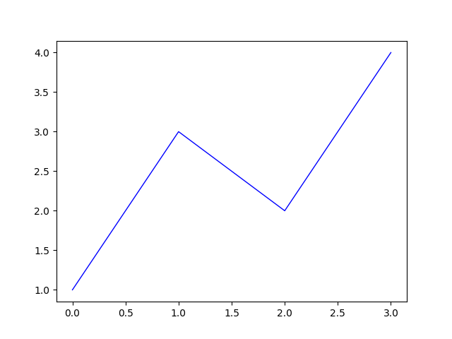
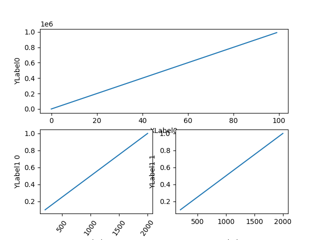
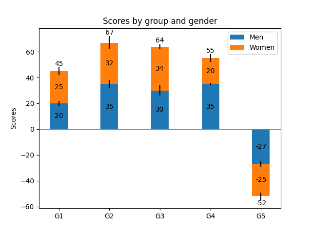
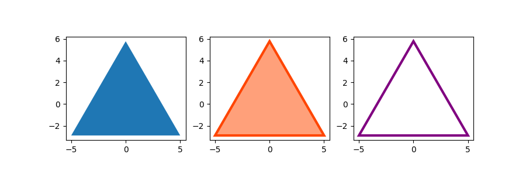
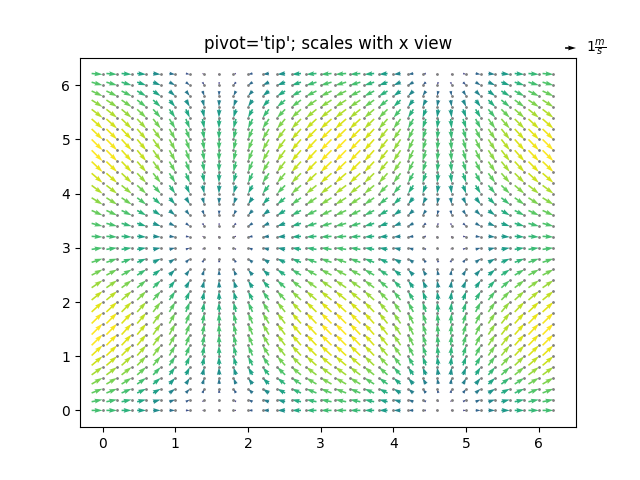
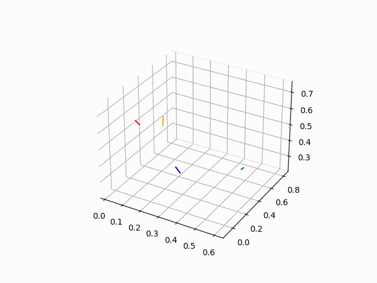

A C++ header-only library for matplotlib based on pybind
matplotlibcpp17 is an yet another C++ library for matplotlib featuring more functionalities than matplotlibcpp.
It is supposed to provide the user with almost full access to matplotlib features in C++, by implementing as many wrapper classes of matplotlib module as possible (like axes::Axes, figure::Figure). And its primary advantage over conventional matplotlibcpp is that the user can pass a variety of arguments as in the form of args and kwargs thanks to pybind11, without the need for coversion to map<string, string>, thus leading to more flexibility.
Dependencies
- pybind11 >= 2.4.3
sudo apt install pybind11-dev (on Ubuntu20.04)- or manual install
- matplotlib >= 3.4.0
- numpy for
mplot3d
- (xtensor == 0.24.0 + xtl, only for
gallery demos)
Usage
Installation
$ mdkir build; cd build;
$ cmake .. -DADD_DEMO=0 (-DCMAKE_INSTALL_PREFIX=<custom path>)
$ make -j
$ make install
$ (make uninstall)
For using matplotlibcpp17 from CMakeLists.txt, see hello_world example.
find_package(matplotlibcpp17)
...
target_link_libraries(a.out matplotlibcpp17::matplotlibcpp17)
Use by add_subdirectory
add_subdirectory(path to matplotlibcpp17)
...
target_link_libraries(a.out matplotlibcpp17::matplotlibcpp17)
Include matplotlibcpp17 directly
descibed in minimal example.
Syntax
The user will need to capsulate arguments in Args(arg1, arg2, ...) == pybind11:tuple and keyword arguments in Kwargs("k1"_a = v1, "k2"_a = v2, ...) == pybind11::dict. The returned value is either a pybind11::object or a corresponding wrapper class. Please refer to the reference and examples below.
- exception:
subplots, TBDs
- conversion: Wrapper class of matplotlibcpp17 like ::container::BarContainer needs to be passed to python interpreter using
unwrap() method in args and kwargs.
Examples
minimal example
g++ ./hello_world/hello_world.cpp -std=c++17 -I./include -I/usr/include/python3.x -I<path to pybind11> -lpython3.x
./a.out
gives

example1 - subplots
From gallery/subplots_axes_and_figures/align_labels_demo.cpp.
auto plt = matplotlibcpp17::pyplot::import();
auto gs = GridSpec(2, 2);
auto ax = fig.add_subplot(Args(gs(0, py::slice(0, 2, 1)).unwrap()));
ax.plot(Args(arange(0, 1000000, 10000)));
ax.set_ylabel(Args("YLabel0"));
ax.set_xlabel(Args("XLabel0"));

example2 - bar plot
From gallery/lines_bars_and_markers/bar_label_demo.cpp. Here subplots() returns tuple<Figure, Axes>.
auto [fig, ax] = plt.subplots();
auto p1 = ax.bar(Args(ind, menMeans, width),
Kwargs("yerr"_a = menStd, "label"_a = "Men"));
auto p2 = ax.bar(
Args(ind, womenMeans, width),
Kwargs("bottom"_a = menMeans, "yerr"_a = womenStd, "label"_a = "Women"));
ax.axhline(Args(0), Kwargs("color"_a = "grey", "linewidth"_a = 0.8));
ax.set_ylabel(Args("Scores"));
ax.set_title(Args("Scores by group and gender"));
ax.set_xticks(Args(ind, py::make_tuple("G1", "G2", "G3", "G4", "G5")));
ax.legend();
ax.bar_label(Args(p1.unwrap()), Kwargs("label_type"_a = "center"));
ax.bar_label(Args(p2.unwrap()), Kwargs("label_type"_a = "center"));
ax.bar_label(Args(p2.unwrap()));
plt.show();

example3 - fill
Fucntions like subplots, TBDs are overloaded because they return different types depending on the arguments. Here subplots() returns tuple<Figure, vector<Axes>>.
From gallery/lines_bars_and_markers
auto [fig, axes] =
plt.subplots(1, 3,
Kwargs("figsize"_a = py::make_tuple(9, 3),
"subplot_kw"_a = py::dict("aspect"_a = "equal")));
auto ax1 = axes[0], ax2 = axes[1], ax3 = axes[2];

example4 - quiver
Use .unwrap() method to pass wrapper class of matplotlibcpp17 to plotting functions.
From gallery/images_contours_and_fields/quiver_demo.cpp
auto plt = matplotlibcpp17::pyplot::import();
auto [fig1, ax1] = plt.subplots();
ax1.set_title(Args("Arrows scale with plot width, not view"));
auto Q = ax1.quiver(Args(X, Y, U, V, M),
Kwargs("units"_a = "x", "pivot"_a = "tip",
"width"_a = 0.022, "scale"_a = 1.0 / 0.15));
auto qk =
ax1.quiverkey(Args(Q.unwrap(), 0.9, 0.9, 1, R"($1 \frac{m}{s}$)"),
Kwargs("labelpos"_a = "E", "coordinates"_a = "figure"));
ax1.scatter(Args(X, Y), Kwargs("color"_a = "0.5", "s"_a = 1));

example5 - gif
Currently only ArtistAnimation is supported. FuncAnimation interface maybe implemented in the future.
From gallery/artist_animation/random_walk.cpp

Demos
gallery folder contains corresponding examples from the official website of matplotlib with the same structure.
build
If you want to build the demos, use -DADD_DEMO=1 (by default it is 0).
$ mkdir build; cd build
$ cmake .. -DADD_DEMO={0, 1} -DUSE_GUI={0, 1}
$ make -j
If you do not need to see the demo with plt.show(), use -DUSE_GUI=1 (by default it is 0). Otherwise the executables will plt.savefig() to gallery/images directory.
make <gallery directory name> runs all the executables under that directory.
make lines_bars_and_markers
Contributing
Contributions to this project are welcome if you could add or want/need more modules :)
 1.9.2
1.9.2